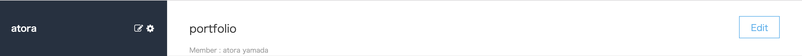
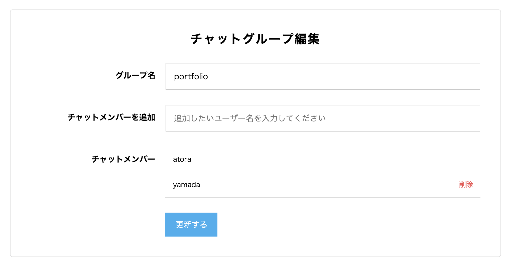

グループ作成・編集
グループ作成ページへ

グループ作成画面（インクリメンタルサーチ）
グループ編集ページへ
グループ編集画面
・グループ作成・編集機能
・ログイン後、画像の矢印が指しているマークを押すと、
グループ作成ページへ遷移します
・チャットメンバーはインクリメンタルサーチが可能です
・トップページのサイドバーのグループ名をクリック後、ヘッダーの"Edit"ボタンから
グループ編集ページへ遷移します